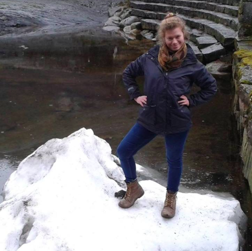
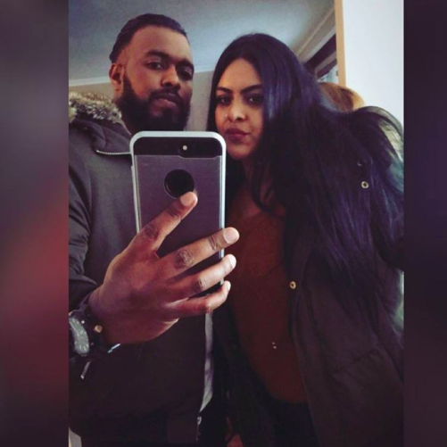

This is our personal website.

Hattie
I'm an IBERS MRes student obsessed with plants! I enjoy making art with them and eating them. This site was a way to get to know eachother in out group- a bit of fun!
Anna
Not only do I study and draw plants in my spare time- I eat plants (and only plants) too! I'm vegan mainly because I really enjoy eating vegan food (sounds crazy, I know)! It's so easy to have this diet in 2018 too, with loads of supermarkets and restaurants having loads of options for us herbivores! I also enjoy cooking and baking- cinnamon rolls are by far my favourite thing to bake.

Sunshi
I used to be an avid reader of fiction- my parents would get annoyed that I didn't do other things with my time- Wuthering Heights was definitely a favourite. Alas, I studied English Literature at A level, and my love of fiction died with my grades. So, I mainly now read cookery books. My favourite is by far THUG KITCHEN. A vegan-friendly, R-rated cookbook that has some inspiring recipe ideas- highly recommend!